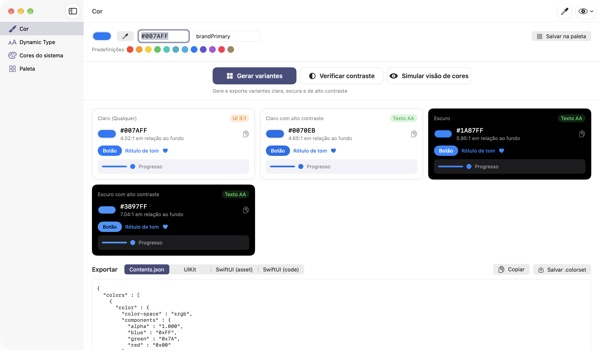
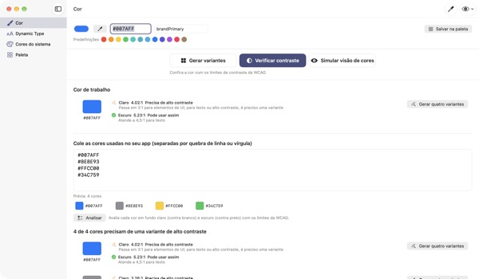
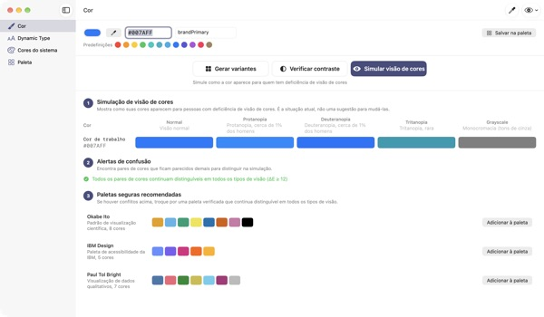
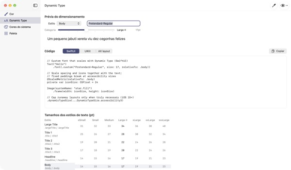

Uma cor na entrada,
quatro aparências na saída
As cores do sistema se ajustam sozinhas ao modo escuro e ao Aumentar Contraste. As cores da sua marca, não. O TetraTint pega uma cor do modo claro, cria as variantes Claro, Claro com alto contraste, Escuro e Escuro com alto contraste, e exporta direto para o Xcode.
Todos os recursos são grátis. Requer macOS 14 ou posterior.

Teste a cor da sua marca
Cole um valor hex ou toque numa predefinição. Com o mesmo cálculo do app, você vê na hora as quatro variantes e o contraste de cada uma.
A cor da sua marca já sumiu no modo escuro?
O azul escolhido no modo claro fica apagado no preto, e quem usa Aumentar Contraste mal consegue ler o texto. Procurar uma cor para cada aparência e medir cada contraste na mão leva meio dia. O TetraTint cria as variantes do jeito que as cores do sistema mudam entre aparências e mostra na hora se cada uma passa.
Confira de uma vez todas as cores que você usa
Cole a lista inteira de hex do seu app e cada cor é classificada: pode usar assim, precisa de alto contraste ou apenas decorativa.
Com um clique, uma cor problemática vira quatro variantes salvas na sua paleta. Ajuda a se preparar para o rótulo de acessibilidade Contraste suficiente na App Store.

Veja com os olhos de quem tem daltonismo
Simule sua paleta com protanopia, deuteranopia, tritanopia e tons de cinza, e receba um aviso para cada par que fica difícil de distinguir.
Carregue com um clique as paletas seguras para daltonismo Okabe–Ito, IBM e Paul Tol, ou use o botão de olho no canto superior direito para ver o app inteiro assim.

Fontes personalizadas que acompanham o tamanho do texto
Veja os 11 estilos de texto em 7 tamanhos e arraste um controle para conferir os tamanhos reais.
Digite o nome PostScript da fonte e receba código para UIKit, SwiftUI e @ScaledMetric, além do código que muda o layout com texto grande.

Três passos para começar
- 1
Informe uma cor base
Cole um hex, capture uma cor de qualquer lugar da tela com o conta-gotas ou escolha uma predefinição.
- 2
Confira as quatro variantes
Veja os selos de contraste e ajuste as variantes que fogem da sua marca.
- 3
Exporte para o Xcode
Copie ou salve como Contents.json, .colorset ou código UIKit e SwiftUI.
Como as variantes são feitas e o que os selos dizem
- Claro (Qualquer)
- Sua cor do jeito que você digitou
- Claro com alto contraste
- Um pouco mais saturada, escurecida até 4.5:1 sobre branco
- Escuro
- Um pouco mais clara e viva (luminosidade +5, saturação +3)
- Escuro com alto contraste
- Clareada até 7:1 sobre preto
- Texto AA
- 4.5:1 ou mais em relação ao fundo, serve para texto
- UI 3:1
- 3:1 ou mais, serve para botões e ícones, mas não para texto
- Baixo
- Abaixo de 3:1, não use em texto, ícones ou status
- Exportação
- Contents.json · .colorset · UIKit · SwiftUI, ou a paleta inteira num só .xcassets
Os valores de referência das cores do sistema vêm das Human Interface Guidelines da Apple e podem mudar com atualizações do sistema. No app publicado, use as APIs de cores do sistema.
Perguntas frequentes
É grátis mesmo?
Sim. Todos os recursos são grátis, sem conta e sem anúncios. Se ajudou, dá para deixar uma gorjeta nos Ajustes; ela não libera nada.
As variantes geradas não combinam com a minha marca.
Ajuste qualquer variante com o seletor de cores do cartão dela. Gerar tudo de novo descarta suas edições manuais e recria tudo a partir da cor base.
Como as variantes são calculadas?
Seguem como as cores do sistema da Apple realmente mudam entre aparências: um pouco mais claras e vivas no escuro, pelo menos 4.5:1 sobre branco no claro com alto contraste e pelo menos 7:1 sobre preto no escuro com alto contraste.
O que significa um aviso na simulação de visão de cores?
Que, nessa simulação, a diferença entre duas cores fica abaixo de ΔE 12 e elas ficam difíceis de distinguir. Não dependa só da cor: use ícones, padrões ou rótulos, ou troque por uma paleta segura.
Como faço uma fonte personalizada suportar Dynamic Type?
Em Dynamic Type, digite o nome PostScript da fonte e escolha um estilo para receber código UIKit, SwiftUI e @ScaledMetric. Nos tamanhos de acessibilidade o Body passa de três vezes o padrão, então evite alturas fixas e lineLimit(1).
As cores exportadas ficam diferentes das cores do sistema no meu app.
Os valores de referência vêm das Human Interface Guidelines e podem mudar entre versões do sistema. Use sempre as APIs UIColor ou Color para as cores do sistema.
Onde minha paleta fica salva?
Só no seu Mac. Nada é sincronizado com a nuvem nem enviado para lugar nenhum. Veja a política de privacidade para mais detalhes.
A cor capturada com o conta-gotas é salva?
Não. Só o valor da cor no ponto escolhido é lido e usado como cor de trabalho. Nenhuma imagem da tela é salva ou enviada.
Em quais Macs funciona?
No macOS 14 (Sonoma) ou posterior. Na exportação, você escolhe onde salvar os arquivos.
Erros, ideias ou dúvidas? Escreva para leeo@kakao.com. Costumamos responder em 2 a 3 dias.